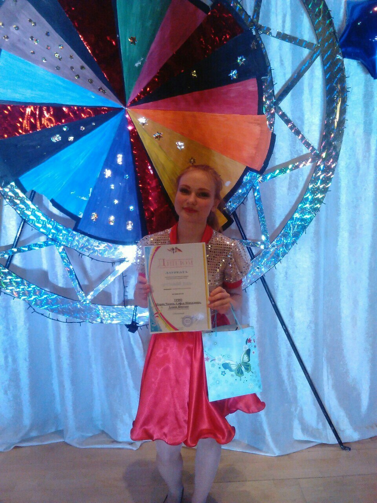
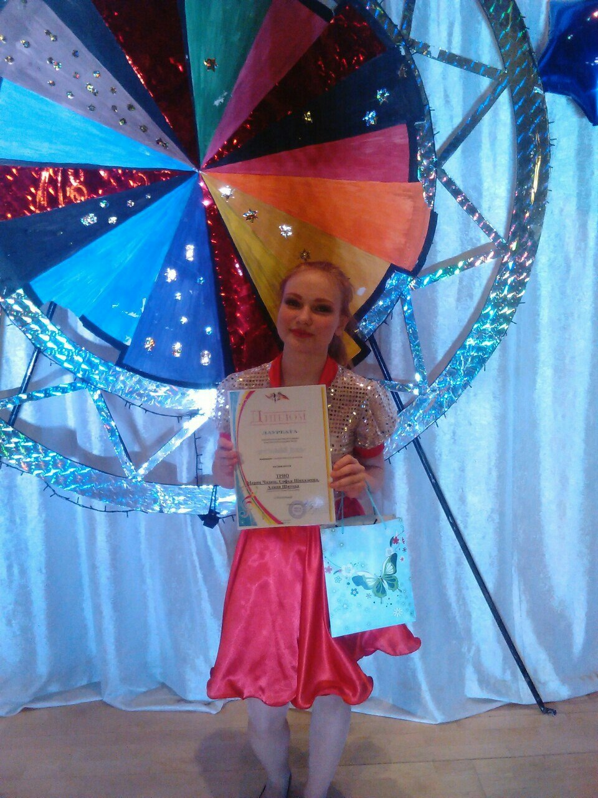

Меня зовут Шихалеева Софья Андреевна. Мне 18 лет. Родилась я в городе Омутнинск 6 июня 2004 года. Я родилась в небольшое семье. Моих родителей зовут Шихалеев Андрей Михайлович и Яговкина Светлана Валентиновна. У меня есть старшая сестра, ее зовут Ксюша, недавно у нее появился сын - мой племянник. Дома у меня живет кот. Его зовут Крош.
Все свое детство я провела в поселке Восточный. С полутора лет, я ходила в детский сад "Снежинка", а после пошла в школу.
Моя школа - МКОУ СОШ №" с УИОП пгт Восточный.
Все 11 лет обучения в школе я старалась быть отличницей, и мне это удалось. Я закончила школу с золотой медалью.
В школе я была активисткой. С пятого класса я была лидером класса, яздила на разные спортивные соревнования, хотя я далеко не спортсмен. Участвовала в различных конкурсах, рисовала, пела и даже танцевала.
Помимо обычной школы, я также посещала музыкальную и художественную. В музыкальной школе я научилась играть на фортепиано, а в художественной красиво рисовать. Также я умею играть на гитаре и укулеле.
Также я занималась год вокалом, ездила на разные конкурсы и даже занимала призовые места. Что касается музыки, я предпочитаю случать art rock, рок, поп-панк, классику и многое другое.
 

в 3 года я научилась читать, и с тех пол все свободное время я готова проводить за книгами. Это может быть различного рода литература. Я всегда любила узнавать что-то новое, и откуда это брать, как не из книг. Мои любимые книги, это книги писательницы Фэнни Флэгг. Вот 2 самые любимые книжки.
Что я могу сказать о себе, я добрая, отзывчивая, ответственная, веселая, активная и хозяйственная. Я просто скажу, что я хороший человек.